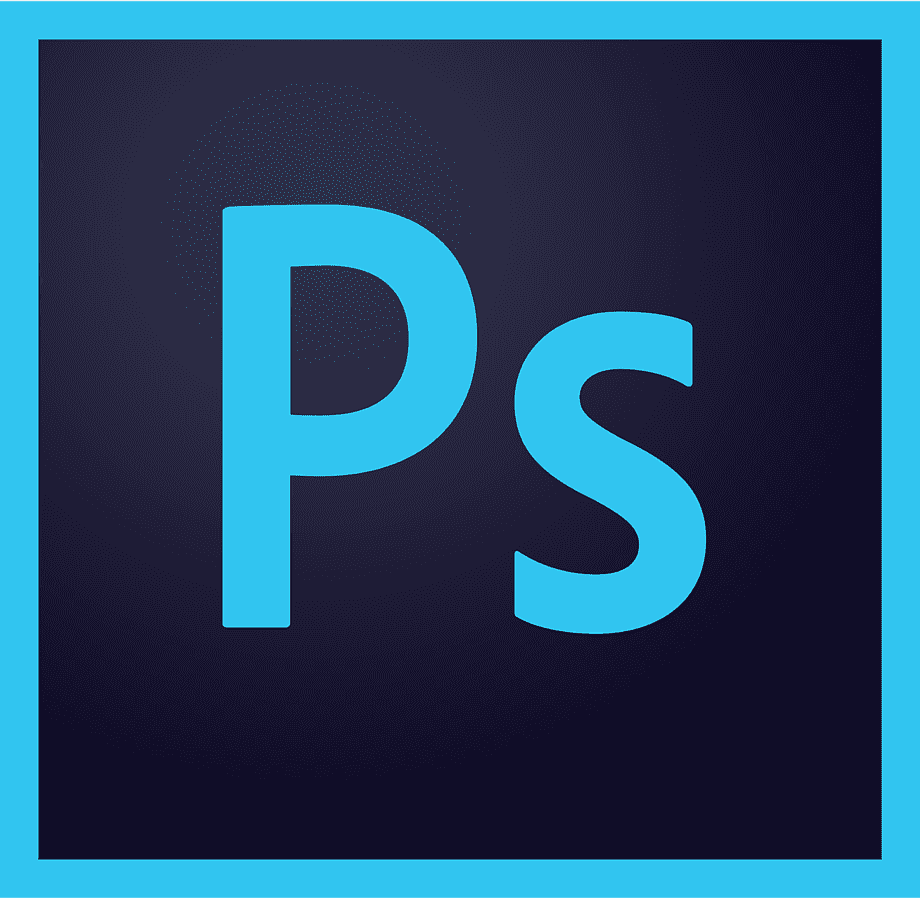

О себе
Тут должно быть что-то обо мне, но будет отрывок из книги. Док Штраус сказал што я должен писать все што я думаю и помню и все што случаеца со мной с севодня. Я не знаю пачему но он гаварит што это важно штобы они могли увидить што я падхажу им. Я надеюсь што падхажу им потому што мис Кинниан сказала они могут сделать меня умным. Я хочю быть умным. Меня завут Чярли Гордон я работаю в пикарне Доннера где мистер Доннер плотит мне 11 доларов в ниделю и дает хлеп или перожок когда я захочю. Мне 32 года и через месец у меня день рождения. Я сказал доку Штраусу и профу Немуру што я не могу харашо писать но он сказал што это ничево и што я должен писать как гаварю и как пишу сачинения на уроках у мис Кинниан в колеже Бекмана для умствено атсталых куда я хажу 3 раза в ниделю по вечерам. Док Штраус гаварит пишы все што думаеш и што случаеца с тобой но я уже не могу думать и по этому мне нечево писать так што я закончю на севодня… Искрине ваш Чярли Гордон.
Мои компетенции
 |
 |  |
| Figma | Photoshop | Illustrator |
Услуги
-
Пока тут будет ничего
-
Ладно, я умею готовить, но обычно мне лень
-
Еще я умею круто спать
-
И мыть посуду
-
А еще профессионально плакать
-
Могу сделать крутой постер
-
Написать код через костыли
-
Больше ничего не умею!